Hairtell Salon:
A website for the hair salon company located in Surrey BC, see the source code on Github, as well as the finalized project.
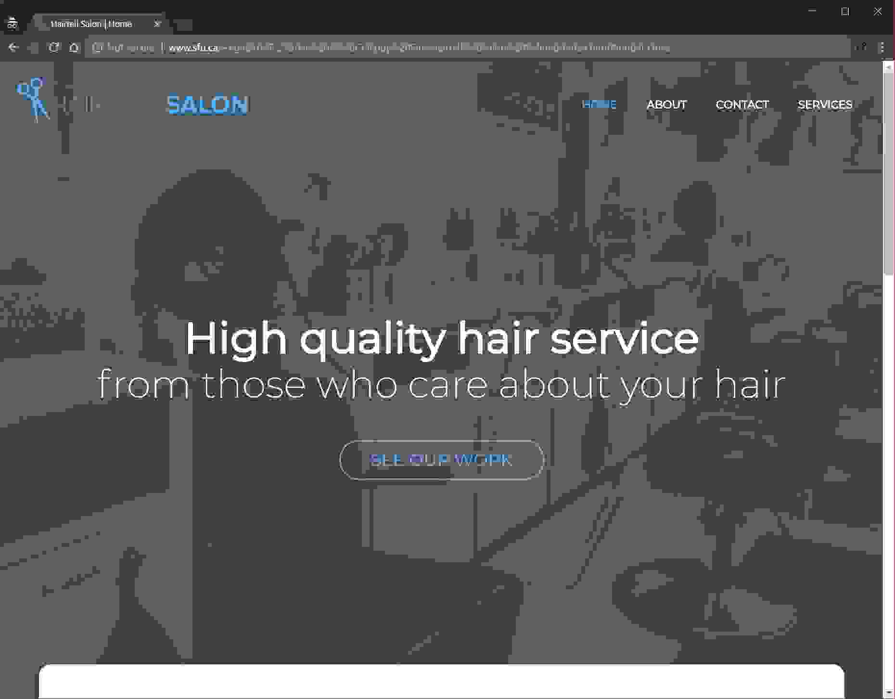 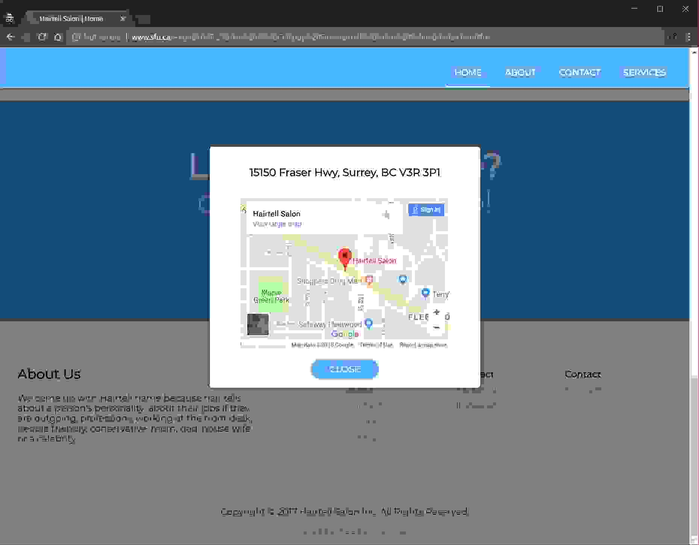
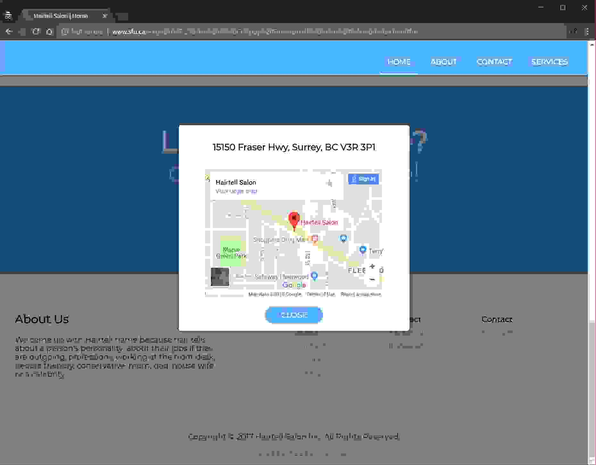
 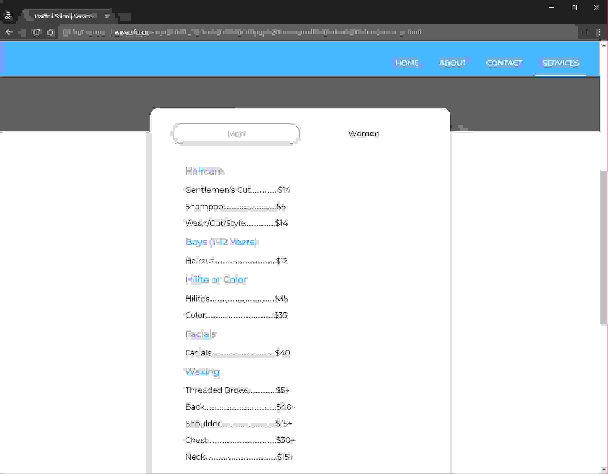
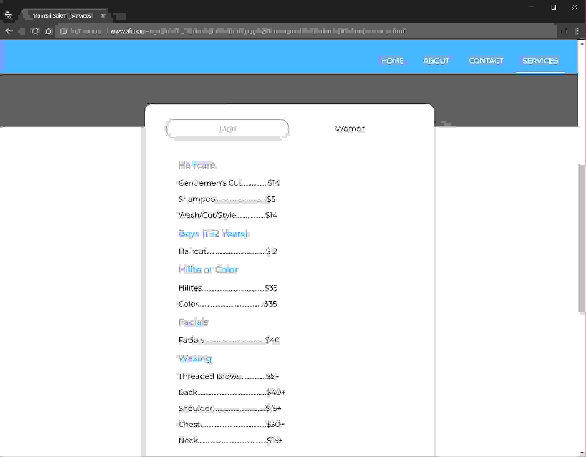
 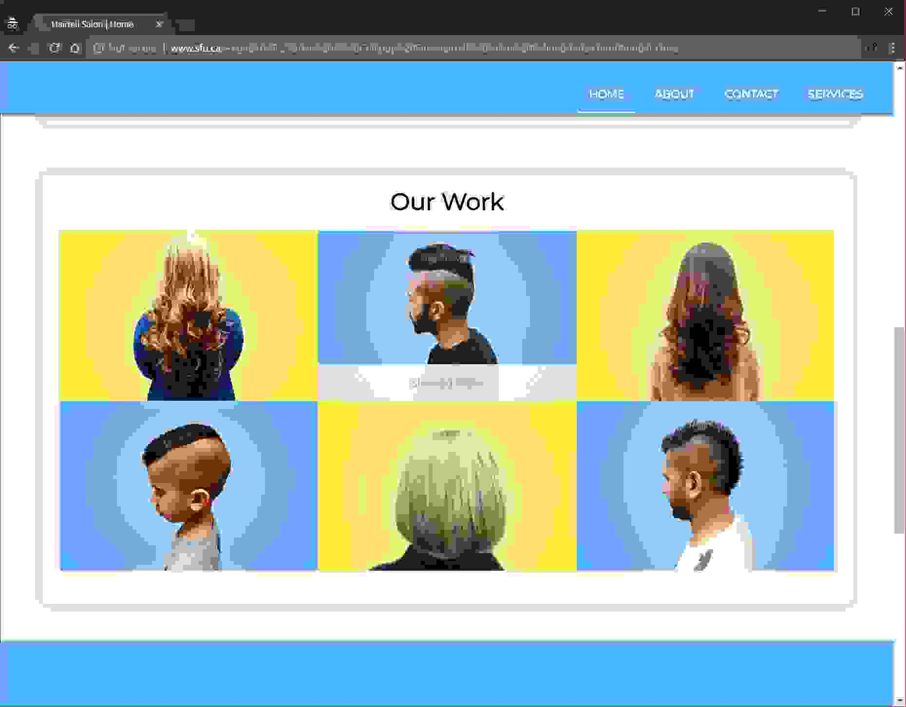
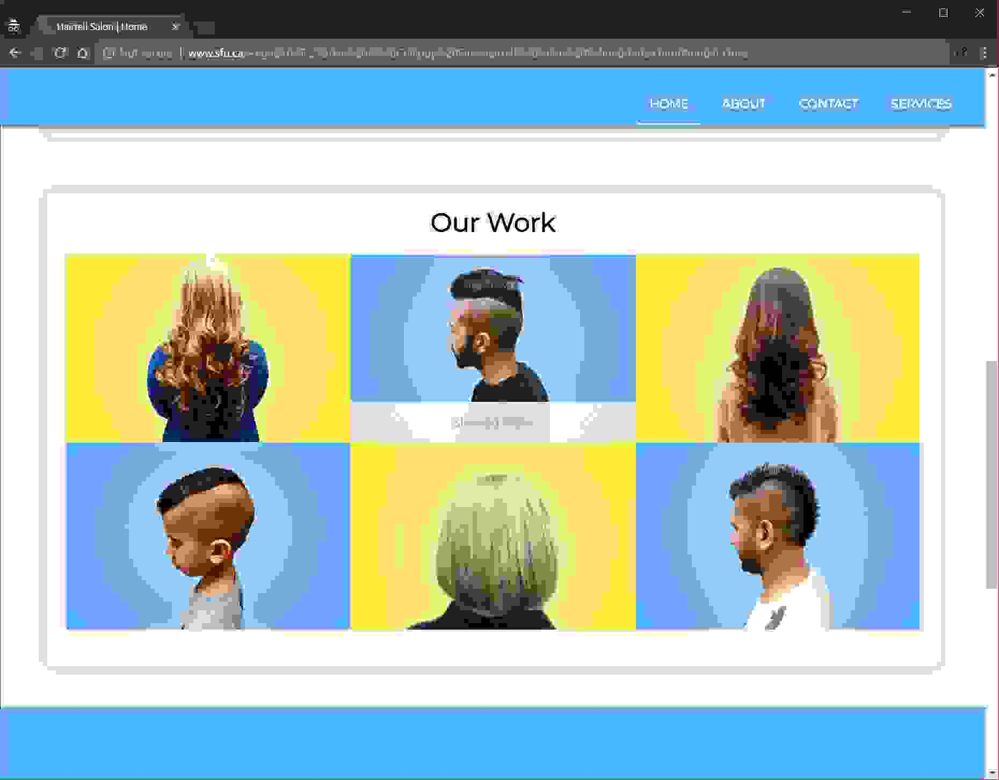

A website for the hair salon company located in Surrey BC, see the source code on Github, as well as the finalized project.
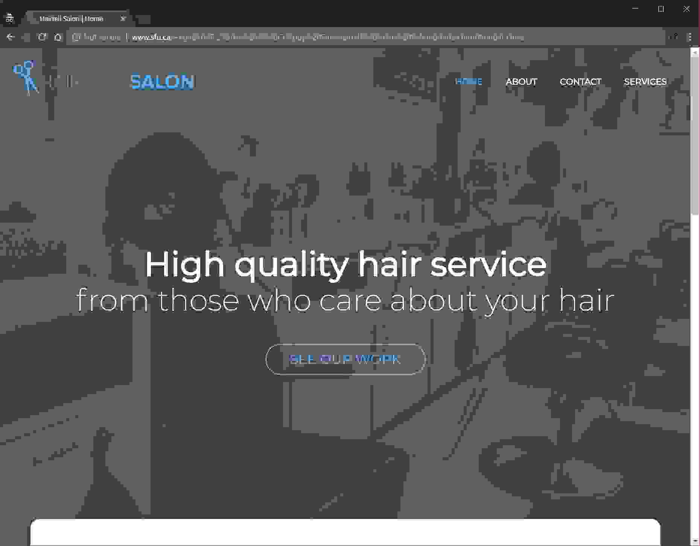
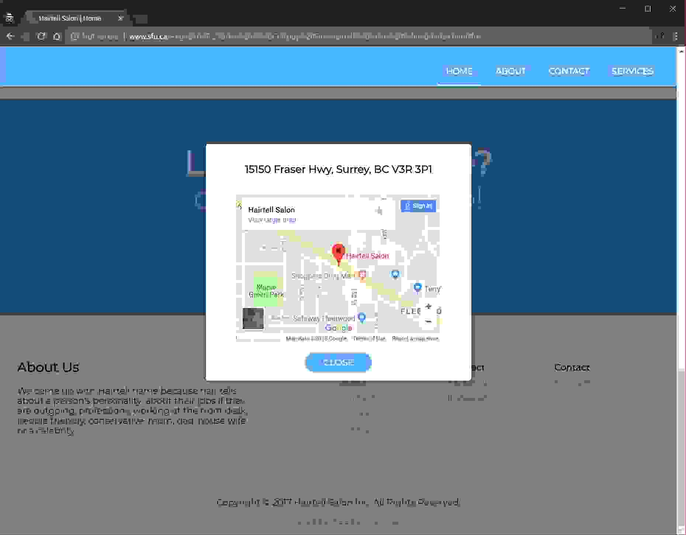
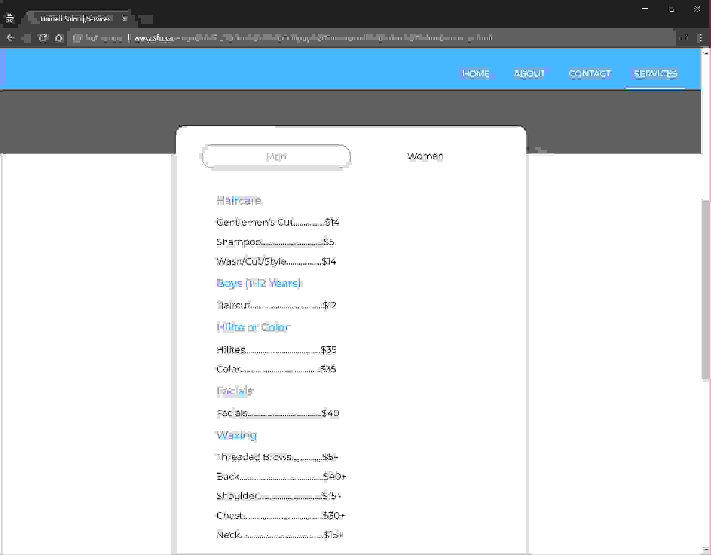
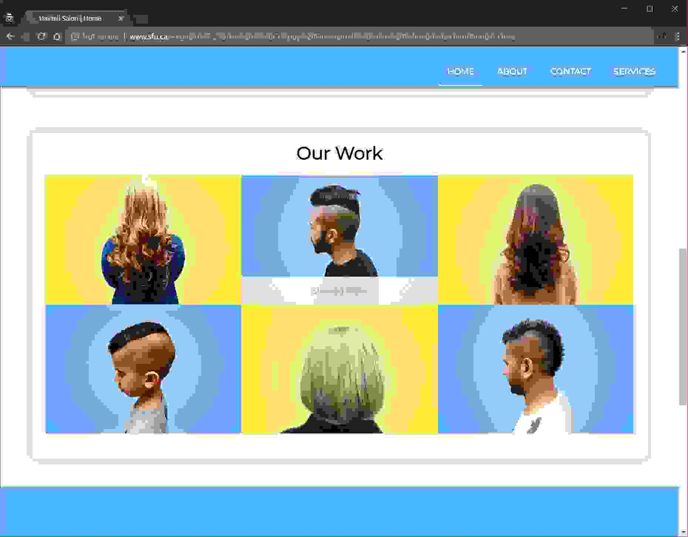
A project for an information design course involved the development of a website for an existing company. We were tasked to find a website that does not look nicely designed, especially for our present day standards. After finding this website, we were to improve the design of the website.
To facilitate the design and development process, there was lots of organization and planning needed. I commenced with simple sketches and wireframe mockups. While doing this, I considered the flaws of the current design, and considered areas in which I could remove those flaws.
Commencing the code, I began turning the wireframes I created and producing them as true HTML and CSS elements. After completing the basic structure, I was able to stylize the design with the CSS. Although the website looked complete and nice on my personal computer, I soon realized that it was looking completely different on other devices and browsers.
To remedy the problems encountered in the intial development, I began researching responsive design. After learning more about responsive design, I was able to implement it in the website. This was also followed by some refreshing design fixes, and overall the website was completed.
The primary problem I encountered was the struggle with responsive design. I soon however, learned about media queries and how to design with columns and grids. This helped me to make the design resonsive that overall solved many problems. The original website that I was fixing had many flaws. It lacked a clear hierarchy, a nice design, and responsiveness. I was successful in solving all those design problems, which overall resulted in a successful website.